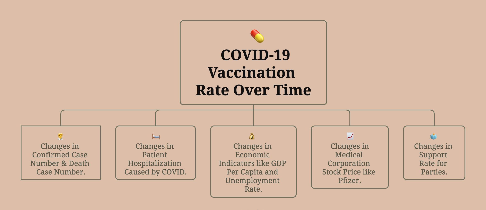
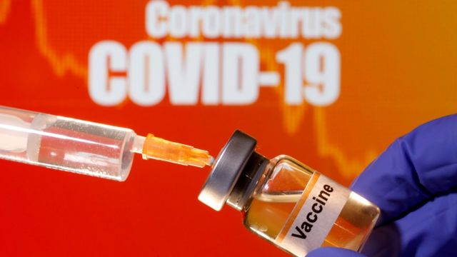

Introduction
The Dynamics of US COVID-19 Vaccination Rate and its Impact
Topic Explanation
The emergence of the COVID-19 pandemic marked an unprecedented juncture in human history. As the virus proliferated, nations worldwide found themselves grappling with the need for swift and decisive action to curb its relentless spread. Soon after the outbreak of the pandemic, states in the U.S. began implementing various community mitigation strategies (e.g., mandatory stay at home orders and business closures) to curb the spread of COVID-19. In total, 42 U.S. states and territories issued mandatory stay-at-home orders, covering 73% of U.S. counties. In the United States, a paradigm shift unfolded, compelling individuals and organizations to reevaluate and adapt their daily routines. A notable consequence of this upheaval was the widespread adoption of remote work, a strategic response aimed at mitigating the transmission of the virus while ensuring the continuity of essential services. Internationally, countries like China responded to the crisis by enacting localized policies, effectively delineating geographic boundaries to staunch the virus’s advance. These measures, ranging from city-wide lockdowns to regional containment strategies, reflected the urgency and gravity of the situation. As societies navigated the uncharted territory of a novel and highly infectious pathogen, a collective sense of unfamiliarity and uncertainty permeated daily life. In the face of this existential threat, the global medical community rallied with unparalleled speed and collaboration. Scientific institutions, pharmaceutical companies, and researchers joined forces to develop and deploy effective vaccines.
However, as these vaccines became available, a nuanced narrative unfolded, marked by public skepticism and questions about their efficacy, given that no vaccine could guarantee absolute immunity. This project endeavors to unravel the multifaceted impact of COVID-19 vaccination rates over time, exploring its influence across diverse realms. Beyond the standard metrics of confirmed cases, mortality rates, and hospitalizations caused by COVID-19, the analysis extends its gaze to encompass economic indicators, stock prices, and even political dynamics. The intricacies of vaccine acceptance and its dynamic impact will be dissected through our time series analysis, revealing the social influence shaped by the ongoing vaccination efforts.

Big Picture
In the pursuit of a comprehensive understanding, our research embarks on a meticulous examination of public data sources, seeking to address pivotal questions that encapsulate the intricate interplay between COVID-19 vaccination rates and multifaceted dimensions. Through the lens of data-driven analysis, our endeavor unfolds as a systematic exploration into the evolving dynamics of vaccination and its cascading impact across diverse realms.
One of the central inquiries guiding this investigation is the temporal evolution of COVID-19 vaccination rates and their influence on various sectors. Delving into the data, we seek to discern patterns and shifts in vaccination rates over time, unraveling the nuanced story of how the collective endeavor to immunize populations unfolds. We examine the effectiveness of the vaccine from a quantitative perspective, scrutinizing its role in mitigating the spread of the virus and potentially altering the trajectory of the pandemic.
Hospitalization rates stand as a critical metric in gauging the efficacy of vaccination efforts. We probe into whether the vaccine, by conferring immunity, contributes to alleviating the burden on healthcare systems. Through rigorous data analysis, we aim to illuminate the extent to which vaccination rates correlate with fluctuations in hospitalization numbers, providing valuable insights into the broader public health landscape.
The economic ramifications of COVID-19 vaccination constitute another facet of our exploration. By scrutinizing the data, we seek to ascertain whether higher vaccination rates correspond to economic recovery. Unpacking the intricate relationship between vaccination efforts and economic indicators, our analysis endeavors to shed light on the potential role of vaccination campaigns in fostering economic resilience.
In the financial realm, we examine the impact of vaccination on medical corporations, particularly in the context of stock prices. This inquiry navigates the nexus between vaccination investments and market dynamics, unraveling the intricate dance between public health imperatives and corporate performance.
Beyond these dimensions, our research extends its gaze into the political arena, exploring the relationship between vaccination rates and party support. By dissecting the data, we aim to uncover whether vaccination rates influence political sentiments, offering a nuanced understanding of how public health measures intertwine with political dynamics.

Literature Review
In the post-pandemic landscape, scholars have delved into comprehensive research on COVID-19 and the ramifications of vaccination, yielding valuable insights. Moghadas et al. (2020) highlight the substantial benefits of COVID-19 vaccines, demonstrating their potential to significantly reduce future infection rates, hospitalizations, and deaths, even with limited protection against infection. Conversely, Barro’s (2022) findings suggest sizable negative effects of vaccination on critical metrics until early December 2021, indicating potential waning efficacy over time.
Further nuanced insights emerge from Guo et al. (2022), indicating complex associations between county-level socioeconomic factors and vaccination rates. Per capita income is negatively linked to vaccination rates in counties with higher proportions of BIPOC individuals, while the unemployment rate shows a negative association in counties with higher proportions of non-Hispanic White individuals.
Khalfaoui et al. (2021) contribute to the literature by revealing a positive and significant influence of COVID-19 vaccination, infection rates, and case fatality ratios on S&P 500 returns at various business cycle frequencies, suggesting an interconnected relationship with financial markets.
Additionally, examining the intersection of vaccination and political dynamics, Galston et al. (2022) reveal a correlation between COVID-19 vaccination rates and party support. States with vaccination rates above the national average predominantly favored Joe Biden in the last November elections, while those below the average leaned towards Donald Trump. The vaccination-rate gap between counties won by Biden and Trump increased significantly, underscoring the evolving political landscape influenced by vaccination trends.
Reference
Moghadas, S. M., Vilches, T. N., Zhang, K., Wells, C. R., Shoukat, A., Singer, B. H., Meyers, L. A., Neuzil, K. M., Langley, J. M., Fitzpatrick, M. C., & Galvani, A. P. (2021). The impact of vaccination on COVID-19 outbreaks in the United States. medRxiv : the preprint server for health sciences, 2020.11.27.20240051. https://doi.org/10.1101/2020.11.27.20240051
Galston, W. A., Kamarck, E., West, D. M., & Cecilia Elena Rouse, A. P. (2022, March 9). For covid-19 vaccinations, party affiliation matters more than race and ethnicity. Brookings. https://www.brookings.edu/articles/for-covid-19-vaccinations-party-affiliation-matters-more-than-race-and-ethnicity/
Guo Y, Kaniuka AR, Gao J, Sims OT. An Epidemiologic Analysis of Associations between County-Level Per Capita Income, Unemployment Rate, and COVID-19 Vaccination Rates in the United States. International Journal of Environmental Research and Public Health. 2022; 19(3):1755. https://doi.org/10.3390/ijerph19031755
Khalfaoui, R., Nammouri, H., Labidi, O., & Ben Jabeur, S. (2021). Is the COVID-19 vaccine effective on the US financial market? Public Health, 198, 177–179. https://doi.org/10.1016/j.puhe.2021.07.026
Barro, R. (2022). Vaccination Rates and Covid Outcomes across U.S. States. https://doi.org/10.3386/w29884

Analytical Angles
Our investigation employs five distinct analytical angles, each offering a unique lens through which we comprehensively address the data science question and navigate the intricate landscape of COVID-19 vaccination dynamics.
1. Temporal Evolution of Vaccination Rates: We scrutinize patterns and shifts in vaccination rates over time, unraveling the nuanced story of the collective endeavor to immunize populations and its temporal evolution.
2. Impact on Healthcare Systems: Hospitalization rates stand as a critical metric in gauging the efficacy of vaccination efforts. We probe into whether vaccination, by conferring immunity, contributes to alleviating the burden on healthcare systems.
3. Economic Recovery: Scrutinizing the economic ramifications of COVID-19 vaccination, we aim to ascertain whether higher vaccination rates correspond to economic recovery, unpacking the intricate relationship between vaccination efforts and economic indicators.
4. Financial Impact: In the financial realm, we examine the impact of vaccination on medical corporations, particularly in the context of stock prices. This inquiry navigates the nexus between vaccination investments and market dynamics.
5. Political Dynamics: Our research extends into the political arena, exploring the nexus between vaccination rates and party support. By dissecting the data, we aim to uncover whether vaccination rates influence political sentiments, offering insights into the intersection of public health measures and political dynamics.
Guiding Question
10 Research Questions:
How have COVID-19 vaccination rates evolved over time, and what patterns can be discerned?
To what extent has the vaccine proven effective in mitigating the spread of the virus, and how does this effectiveness manifest quantitatively?
Does higher vaccination rates correlate with a reduction in hospitalization numbers, contributing to a more resilient healthcare system?
Can we observe a correlation between vaccination rates and economic recovery, and if so, what are the nuances of this relationship?
How do vaccination efforts impact the stock prices of medical corporations, and what are the broader financial implications?
To what extent do vaccination rates influence political sentiments and party support, unveiling the intersection of public health and political dynamics?
Are there geographical variations in vaccination rates, and how do regional differences impact the overall efficacy of vaccination campaigns?
How do demographic factors contribute to vaccination disparities, and what are the implications for public health interventions?
What lessons can be drawn from the global response to COVID-19 vaccination for future pandemics and public health emergencies?
Can time series analysis and forecasting models predict the future impact of the COVID-19 vaccination in the post-pandemic era?